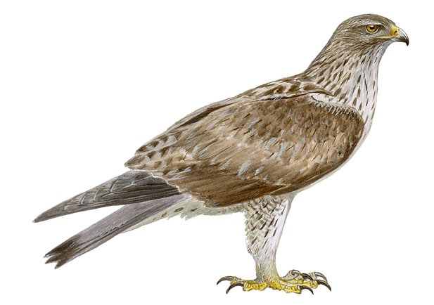

Presente en la mayor parte de la Región, aunque de forma muy escasa. Sus poblaciones están disminuyendo. Falta en la grandes llanuras y en las zonas muy elevadas.
Entre las grandes águilas, es la más ágil lo que le permite cazar un gran número de aves de tamaño medio y también la de coloración más pálida. Está muy asociada a ambientes mediterráneos, y por eso sus poblaciones más importantes se encuentran acantonadas en Extremadura, en las sierras del Levante y en la región oriental andaluza.
